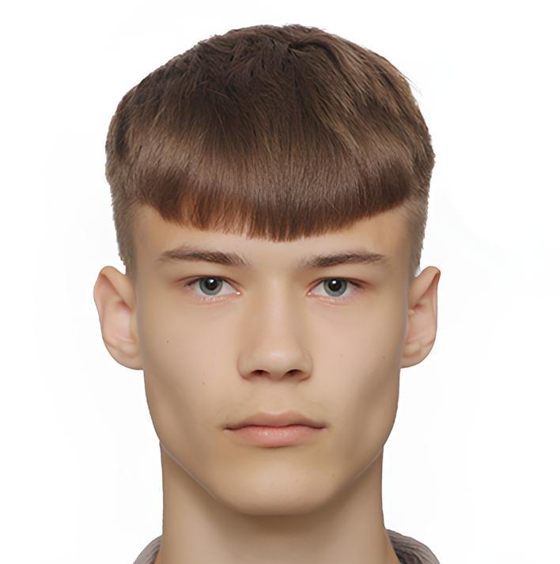

Обо мне
ФИО: Овечкин Андрей Максимович
Место учёбы: СПбГУ, Математико-механический факультет, кафедра системного программирования
Интересы и увлечения: Программирование, Музыка, Туризм, Волейбол
Краткая биография
Приехал с юга России учиться системному программированию в СПбГУ. Имею небольшой опыт участия в различных проектах и соревнованиях (ICPC, Начни Игру, РуКод, Технокубок и т.д.). Начал программировать в 2022 году и в тот же год стал увлекаться туризмом и путешествиями. За спиной также 7 лет музыкалки и 11 лет спорта.
Навыки
Языки программирования
Веб-разработка
Компьютерная вёрстка
Мои проекты
Archiver-Huffman
Учебный проект архиватора, реализующий классический алгоритм сжатия Хаффмана. Программа позволяет сжимать и распаковывать файлы, наглядно демонстрируя принципы построения префиксных кодов и эффективного кодирования данных.
NetAnalysys
Высокопроизводительный анализатор графов на Rust с интерактивным терминальным интерфейсом (TUI). Загружает датасеты, вычисляет ключевые метрики (плотность, компоненты связности, коэффициенты кластеризации) и выполняет приближённую оценку кратчайших путей с помощью landmark-методов.
Marline
Участие в развитии высокопроизводительной Rust-библиотеки для дедупликации данных на основе Similarity-Based Chunking (SBC). В рамках проекта занимаюсь поиском и исправлением багов, а также тестированием существующей функциональности: проверкой корректности работы дельта-кодировщиков, алгоритмов кластеризации и параллельной обработки данных.
Контакты
- Email (личный): andryu.ovechkin@gmail.com
- Email (рабочий): st140541@student.spbu.ru
- Telegram: @oamstrawberry
- GitHub: github.com/Iseyne